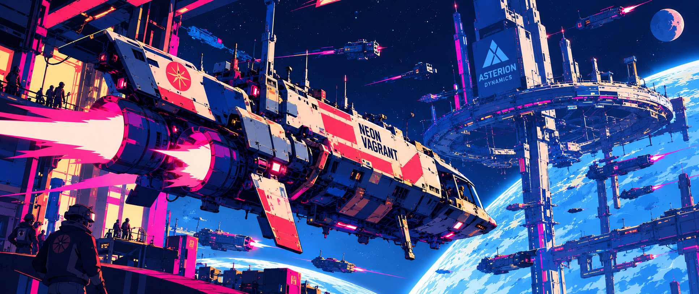
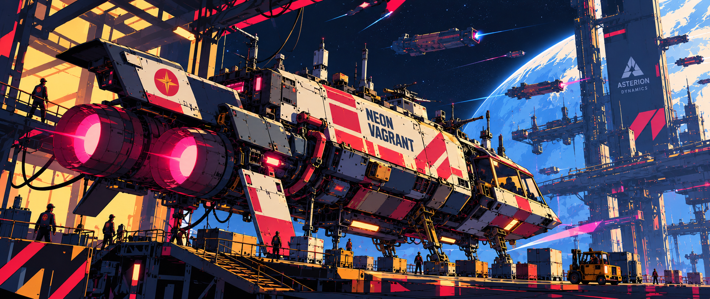
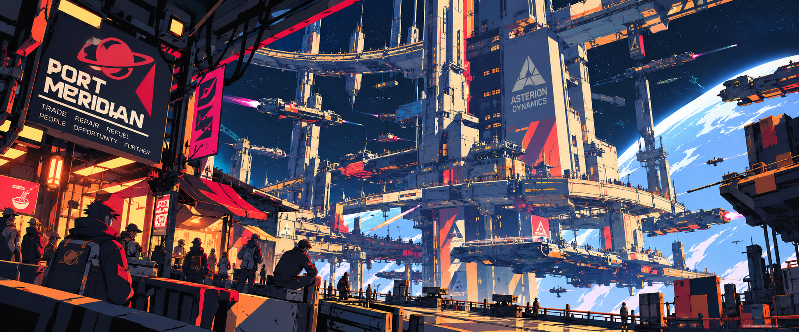
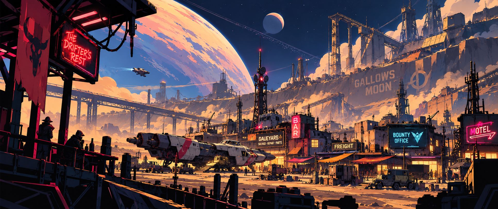
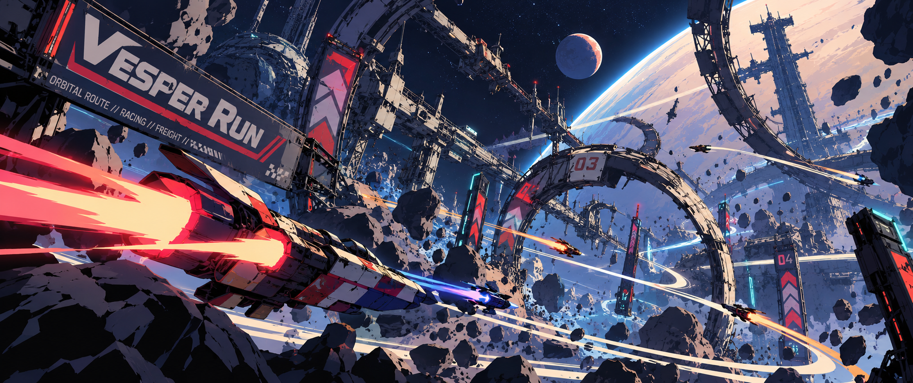

Independent
Legal enough to operate. Independent enough to annoy everyone with shareholders.
INDEPENDENT TRANSIT NETWORK // UNVERIFIED NODE
FREE TRANSIT // RECOVERY // BOUNTY // COURIER
Megacorporations own the gates, the ports, the contracts, and increasingly the space between them. The Neon Vagrant is one of the stubborn independent ships still slipping through the cracks.

Legal enough to operate. Independent enough to annoy everyone with shareholders.
Courier work, recovery jobs, bounties, salvage, passenger transport, and “misunderstandings.”
The largest megacorporation in the galaxy. They prefer closed systems. The Vagrant is an open door.
The Free Transit Accords still protect independent vessels. Asterion cannot quite outlaw ships like the Vagrant — so it settles for making survival expensive.
INDEPENDENT VESSEL // FREE TRANSIT ACCORD REGISTERED

Once a support craft attached to a racing career that ended badly, the Vagrant is now captain Mara Vexley’s aging courier and recovery ship — patched, overworked, frequently underfunded, and kept flying through equal parts engineering talent and spite.
Independent vessels occupy an awkward legal niche. They can accept work outside corporate networks, carry passengers across jurisdictions, and move cargo through neutral ports without signing their lives over to a megacorp. That makes them useful to ordinary people — and infuriating to companies that prefer every journey to pass through their tollbooth.
SPACE PATROL BOOKING ARCHIVE
Select a mugshot to open the associated dossier.
POLITICAL / CORPORATE / COMPETITIVE LANDSCAPE
A sprawling interstellar law-enforcement body tasked with policing routes no single government can claim. Often decent people. Frequently inconvenient paperwork.
Ports, gates, colonies, logistics, infrastructure, private security, and enough subsidiary companies to make monopoly law mostly decorative.
A newer three-person bounty crew who consider the Neon Vagrant their legendary rivals. Mara knows them as “those kids with the orange ship.”
ASSOCIATED PERSONS
Select a file to open its profile.
NAVIGATION CACHE // SELECTED DESTINATIONS

A sprawling freeport stitched together from decommissioned stations and stubborn legal precedent. Everybody trades here. Nobody admits ownership.
Asterion’s immaculate orbital city: beautiful, efficient, safe, and capable of monetizing every breath you take between docking and departure.

Mining camps, salvage yards, old refineries, cheap motels and people who came this far out because they dislike being asked follow-up questions.

A legendary chain of asteroid corridors and gravity slingshots where pilots become famous, rich, dead, or—occasionally—all three in that order.
These location files are starter entries. Add, remove, rename, or expand them as the galaxy develops.